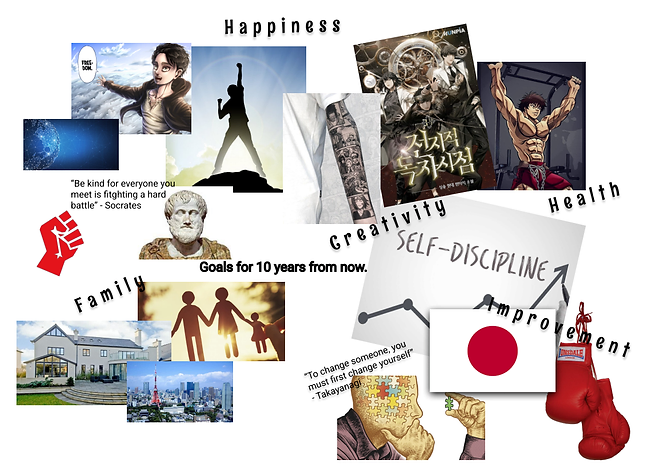

Vision board

Wat is een vision board?
In een vision board laat je in het algemeen zien wat jij wil van jezelf over 10 jaar. Dit doe je door afbeeldingen te verzamelen die dit doel moeten representeren. In mijn vision board zijn er een paar dingen te zien die ik belangrijk vind.
Werk en moreelgrondwerk
In de linkerbovenhoek is mijn visie voor werk gerelateerde dingen te zien. Hier is bijvoorbeeld het teken van socialisme en een quote van Socrates te zien. Deze afbeeldingen representeren het morele grondwerk waar ik mijn meningen baseer en hoe deze invloed hebben op mijn werk later, al ben ik geen socialist representeerd dit voor mij meer mijn belang voor dingen zoals de gesocialiseerde gezondheidszorg en andere gesocialiseerde waarden. Zo vind ik het belangrijk om niet succes te vinden van het harde werk van anderen.
Hobby's
De rechterbovenhoek heeft te maken met hobby's en dingen die mij gelukkig maken. Zo vind ik sporten en lezen erg leuk en hoop ik dit ook over 10 jaar nog te doen. Ook vind ik zelfexpressie met name door tattoos iets waar ik steeds meer geïnteresseerd in raak en ik in de toekomst ook zeker iets mee wil doen.
Familie
Linksonder zijn dingen omtrent familie te zien. Zo ben ik van plan in een stad te blijven wonen in een iets groter dan gemiddeld huis. Ook hoop ik dat ik op mijn dertigste al begin aan mijn eigen familie.
Persoonlijke verbetering
Rechtsonder is in het teken van zelfverbeteringen. Dit gaat over skills die ik nog wil leren en vaardigheden die ik wil bezitten over 10 jaar. Zo wil ik Japans goed leren en ook een keer naar Japan toe, ook wil ik me weer verdiepen in de bokswereld. Dit is iets waar ik in mijn jongere jaren veel tijd aan heb gespendeerd maar wat langzaam weer uit mijn leven verdween naar mate ik ouder werd, dit wil ik weer oppakken en als hobby willen oefenen in mijn vrije tijd.
×